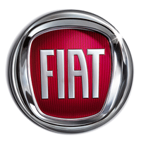

The group's activities were initially focused on the industrial production of cars, industrial and agricultural vehicles. Over time it has diversified into many other fields, and the group now has activities in a wide range of sectors in industry and financial services. It is Italy's largest industrial concern. It also has significant worldwide operations, operating in 61 countries with 1,063 companies that employ over 223,000 people, 111,000 of whom are outside Italy.